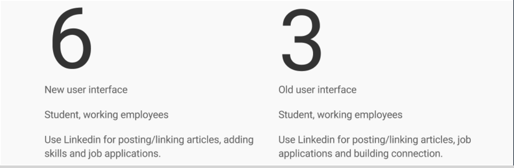
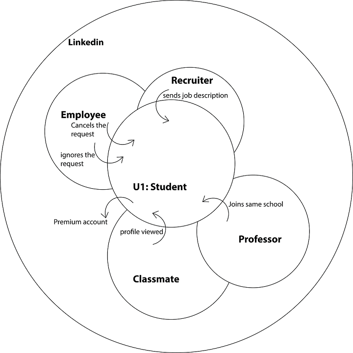
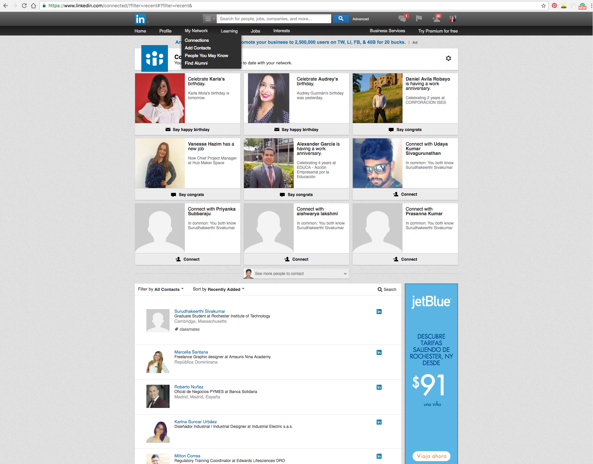
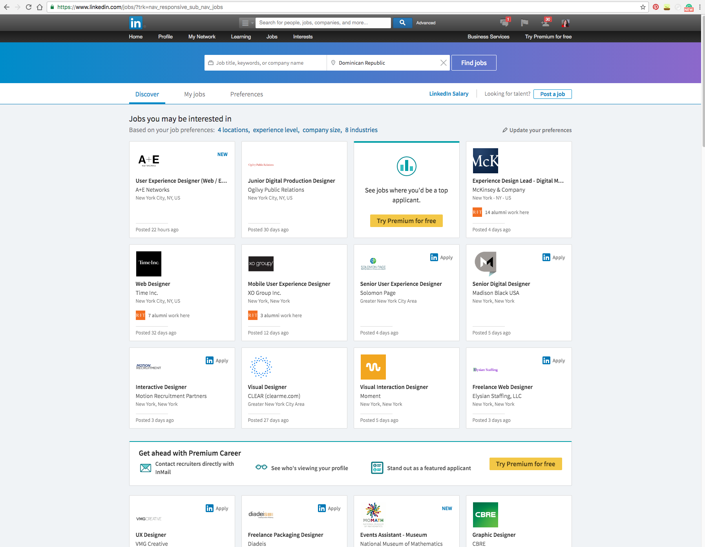
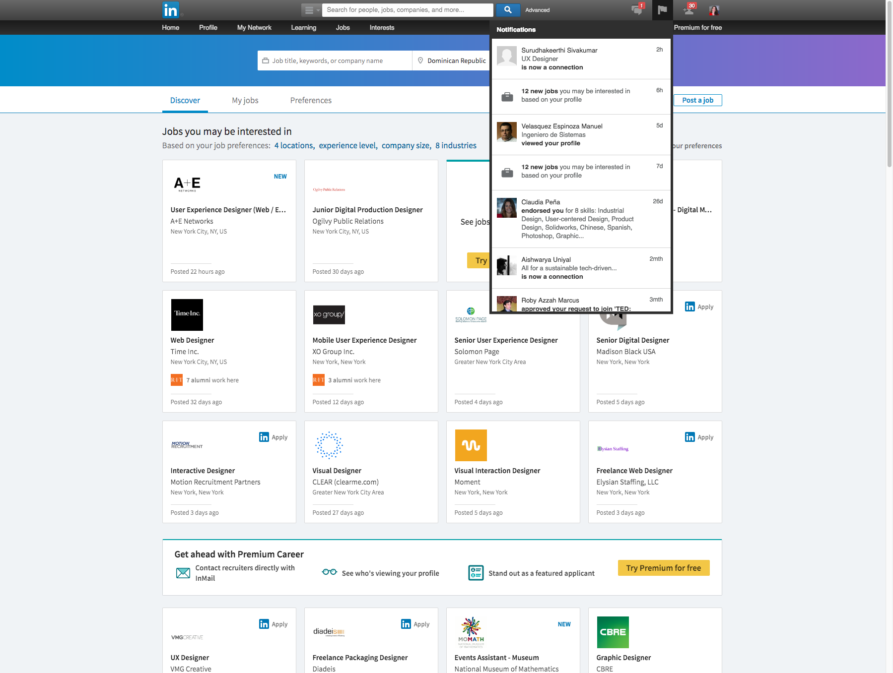
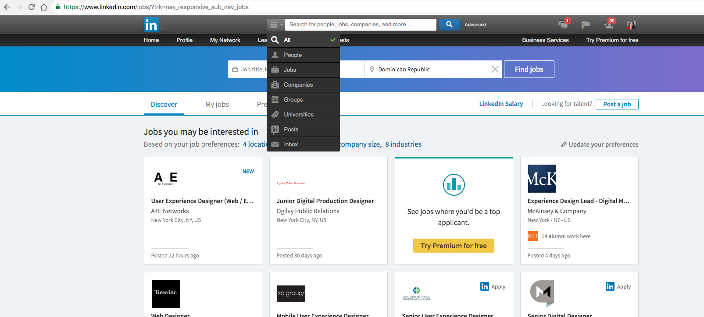
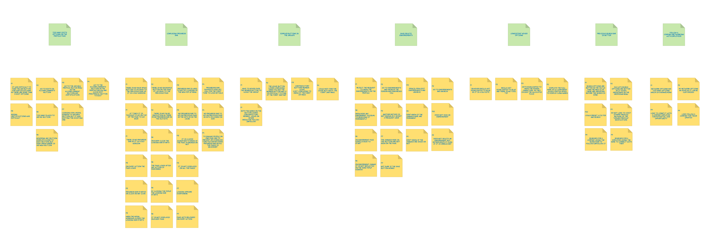
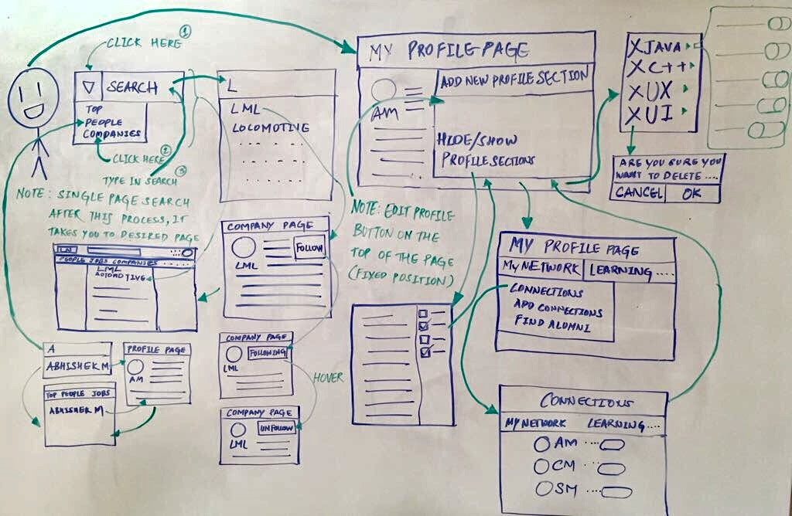

To redesign the new LinkedIn UI on the basis of UX research
Description
In February 2017, LinkedIn launched a new UI that heavily emphasized
design, potentially neglecting some critical aspects. We propose
a design plan to identify these drawbacks and strive for a more
balanced and effective design.
You all may have experienced the new user interface which LinkedIn
has rolled out a few days ago. We have also observed that the
new UI is not available for all users; there are still a few
who have the previous UI.
So we wanted to seize this opportunity,
this short transition time, to collect user data and come up
with a new design that incorporates the best elements of both
versions. Moreover, we aim to introduce features that are missing
in both UIs. The basic idea behind this study is to evaluate the
updated design with users and provide design suggestions for
the platform.
The task scenarios given to the users are based
on the most common tasks performed by users (in this case, students)
on LinkedIn. The study aims to provide the necessary set of design
changes that can further enhance the website's usability.
Directions for Solutions
Demographics

Interpretation of Data
Following are the notes taken from the user interviews
Uses Old UI
1. Irritated with new popups
2. Auto scroll of page after closing popup window
3. Thinks hiding endorsement = removing endorsement
4. Sees new UI for the first time
5. Wished to have photos of people who endorsed her
6. Endorsement section from old UI was better
7. Less options are visible
8. Search is confusing
9. Does not understand the meaning of follow button
10. Not sure how to unfollow company
11. Cannot differentiate between headings and buttons
12. Difficulty in adding new section
Flow Model
It depicts people's responsibilities and the communication
and coordination required to accomplish a job.
Sequence Model
A step-by-step recording of the tasks observed or retrospective
accounts recorded during the Contextual Interviews.
Cultural Model
It reveals influences on a person, whether external to the company
or internal company policies..

Artifact Model
They are the copies or representations of physical or electronic
things that the user creates, passes, or references to
accomplish a task.




Affinity Design
After interviewing and observing a number of participants,
the team was able to narrow down its focus on design principles
for the LinkedIn experience with the help of an affinity diagram.

Looking at the top level (green) post-it notes on the diagram above, and working from left to right:
Too many edit options on the profile page
Saving/deleting endorsements
Previous search option is better
Confusing button labels
Visioning Diagram
Visioning is very similar to traditional task analysis. It
delineates each step, identifies triggers for the steps, outlines
various strategies for achieving each intent, and pinpoints breakdowns
in ongoing work. Additionally, it may benefit from vocabulary, grammar,
and spelling check.

Story boarding
Problem 1
A user wishes to search for a company called LML. He types the name of the company in the search bar and
clicks on the search button. The user is taken to the search results page which shows the top results
instead of showing the list of companies.
Solution 1
A user searches for a company named LML by typing its name in the search bar and adding a filter of
“company” before clicking on the search button. After the search button is clicked, it takes the user to
the search results page with the list of companies.
Problem 2
The user wishes to follow a group. He finds the group’s page and clicks on the follow button.
The button state changes from “Follow” to “Unfollow”. He then later visits the page again and
notices that the button state is “Following” and when he hovers over it, it changes to “Unfollow”.
Solution 2
He finds the group’s page and clicks on the follow button. The button state changes from “Follow”
to “Following” and the user knows that he is following the group. When the user hovers over the button,
its state changes to “Unfollow”. At this time the user knows that when he clicks on it, he would
unfollow the company.